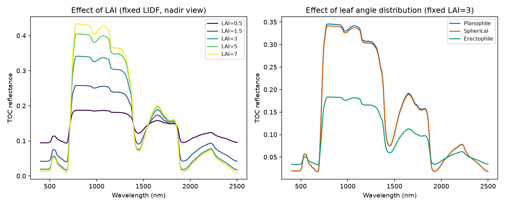
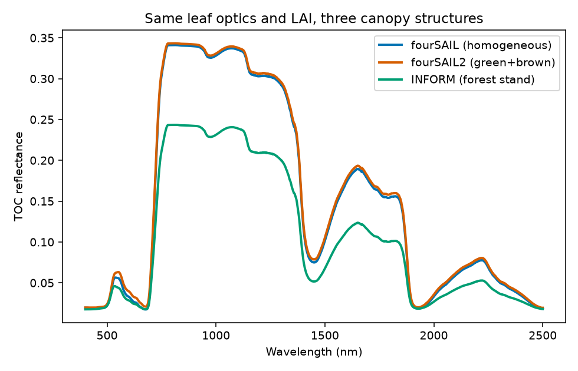

04. Canopy Radiative Transfer Models
What you will learn
What fourSAIL, fourSAIL2, and INFORM each simulate, and what structural assumption separates them.
How LAI and leaf-angle distribution (LIDF) change top-of-canopy (TOC) reflectance, quantitatively.
How to run and interpret all three canopy models on the same leaf optics.
Concept
A canopy model takes a leaf model’s reflectance/transmittance, a soil background, canopy structure, and sun/view geometry, and returns TOC reflectance – what a sensor above the canopy sees.
Model |
What it represents |
What makes it different |
|---|---|---|
fourSAIL |
The classic PROSAIL turbid-medium canopy: a single, statistically homogeneous “cloud” of leaves at a given LAI and angle distribution – no explicit 3D structure. |
The reference/default; single-layer, single leaf-biochemistry profile. |
fourSAIL2 |
Two-layer canopy (a green layer + a brown/senescent layer,
|
Same turbid-medium idea, but two vertically-stacked layers instead of one – e.g. a canopy with visible dead/dry material mixed in with live foliage. |
INFORM |
Forest-stand extension (Atzberger): explicit tree crowns (stem density, crown diameter, height) over an understorey + background. |
The only one of the three with real gap/shadow geometry. |
Python tools used
Function |
Key arguments |
|---|---|
Trait dict (leaf + |
|
|
Adds |
Adds |
Run the example
import numpy as np
from toolsrtm import foursail
inputLUT = dict(N=1.5, Cab=40, Car=8, Anth=1, Cbrown=0, EWT=0.01, LMA=0.009, alpha=40,
LIDFa=-0.35, LIDFb=-0.15, TypeLidf=1, LAI=3, hspot=0.01, tts=30, tto=0, psi=0)
rsoil = np.full(2101, 0.15)
wl = np.arange(400, 2501)
def sweep_lai(values):
out = []
for v in values:
lut = dict(inputLUT); lut["LAI"] = v
out.append(foursail(lut, rsoil, leaf_model="PROSPECT-D", spectrum_all=True).rsot)
return np.array(out)
lai_vals = [0.5, 1.5, 3, 5, 7]
lai_curves = sweep_lai(lai_vals)
print("NIR (850nm) reflectance by LAI:", dict(zip(lai_vals, lai_curves[:, 450].round(4))))
Result
Printed output (exact, deterministic):
NIR (850nm) reflectance by LAI: {0.5: 0.1872, 1.5: 0.2576, 3: 0.3404, 5: 0.4038, 7: 0.4316}
{kind=link}

Real output: increasing LAI raises NIR reflectance but with visibly
diminishing returns (LAI 5 -> 7 barely moves); leaf angle distribution
has almost no effect at this nadir view (tto=0) except for
erectophile, whose near-vertical leaves present much less projected
area to a straight-down sensor.
{kind=link}

Real output: same leaf optics and LAI (3) through all three models –
INFORM sits well below fourSAIL/fourSAIL2 across the whole spectrum
(explicit crown/gap shadow geometry that a homogeneous turbid medium
doesn’t have); fourSAIL2 with a modest fraction_brown=0.1 is
nearly indistinguishable from plain fourSAIL here.
Interpretation
NIR reflectance rises with LAI (0.187 at LAI=0.5 to 0.432 at LAI=7) but
saturates – the jump from LAI 0.5 to 3 (+0.153) is much larger than from
LAI 5 to 7 (+0.028). This is the physically expected “LAI saturation”
behaviour: once enough leaf layers exist to scatter nearly all incoming
NIR light multiple times before it can escape, adding still more leaves
changes the outgoing signal only marginally – one of the best-known
practical limits of optical LAI retrieval (very high LAI canopies become
hard to distinguish from each other in the NIR alone). Leaf angle
distribution barely changes reflectance at this nadir viewing geometry
for planophile vs. spherical, but erectophile (near-vertical leaves)
drops noticeably – at tto=0 a vertical leaf presents little
projected area to a straight-down sensor, so more of the signal comes
from the soil/lower canopy instead. INFORM’s forest-stand reflectance is
lower than a same-LAI fourSAIL canopy at every wavelength – exactly what
real forest canopies show relative to a closed homogeneous canopy,
because gaps between tree crowns let some of the signal come from
shadow/background rather than sunlit leaves.
Try it yourself
Re-run the LIDF comparison at
tto=40(an oblique view) instead of nadir – the erectophile/planophile difference should become much larger.Push
LAIpast 7 (try 10, 15) and confirm the NIR value keeps flattening rather than continuing to rise linearly.In the fourSAIL vs. fourSAIL2 comparison, raise
fraction_brownfrom 0.1 to 0.6 and see how much more the two curves separate.
Common mistakes
rsoilmust be a 2101-element array matching the model’s native 400-2500nm/1nm grid – not a scalar.inform()returns the TOC spectrum directly (a plain array), unlikefoursail()/foursail2()which return a result object with.rsot– a real, useful-to-know inconsistency across the three functions.LAI-vs-reflectance saturation means a small reflectance difference at high LAI can correspond to a large true LAI difference – don’t expect linear sensitivity across the whole LAI range (the sensitivity-analysis chapter covers this quantitatively).
Next
05. Soil & Atmosphere – the soil background these canopy models take as an input, modelled properly instead of assumed flat, plus the atmosphere step to go all the way to top-of-atmosphere.
Using R? -> ToolsRTM Tutorial 02: From Leaf to Canopy Reflectance and Tutorial 04: Comparing Models